(This is an early web page, last updated in 2005)
|
A picture tour through ground zero - PictureTours1
|
|
This is my gut reaction to these pictures. If I knew nothing
else and had only been given these pictures, and the memory of the building
that once stood on this site, I would conclude that WTC1 and WTC2 were
blown up.
|
|
Source of photos: http://www.parrhesia.com/wtc/wtc-photos.htm
I have a great deal of appreciation, respect, and admiration for "AP,"
the person who took these pictures.
It was a wonderful treasure you have provided to us.
These pictures provide the viewer with terrific evidence about what
happened.
Your efforts are greatly appreciated.
Thanks!
|
There are three ways to get to the pictures, if you don't click
directly on the links I've given below each description.
http://www.parrhesia.com/wtc/wtc-photos.htm
http://www.parrhesia.com/wtc/
http://www.parrhesia.com/wtc/tn/wtc030.jpg.html |
|
|
|
I've listed them in descending order, beginning with #30.
|
|
Click on images, below, to enlarge.
|
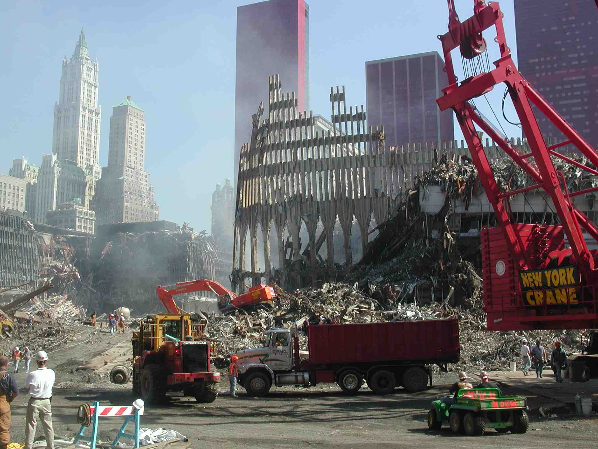
#30
Here's one that begs the question: If the building "collapsed," why are these outer columns standing and the core columns are not? I'm impressed how white that guy's shirt is (bottom, next to sawhorse). Why isn't he dirty? That red crane (far right) is really clean, too!
(10/3/01) Source: by Anonymous Photographer
|
|
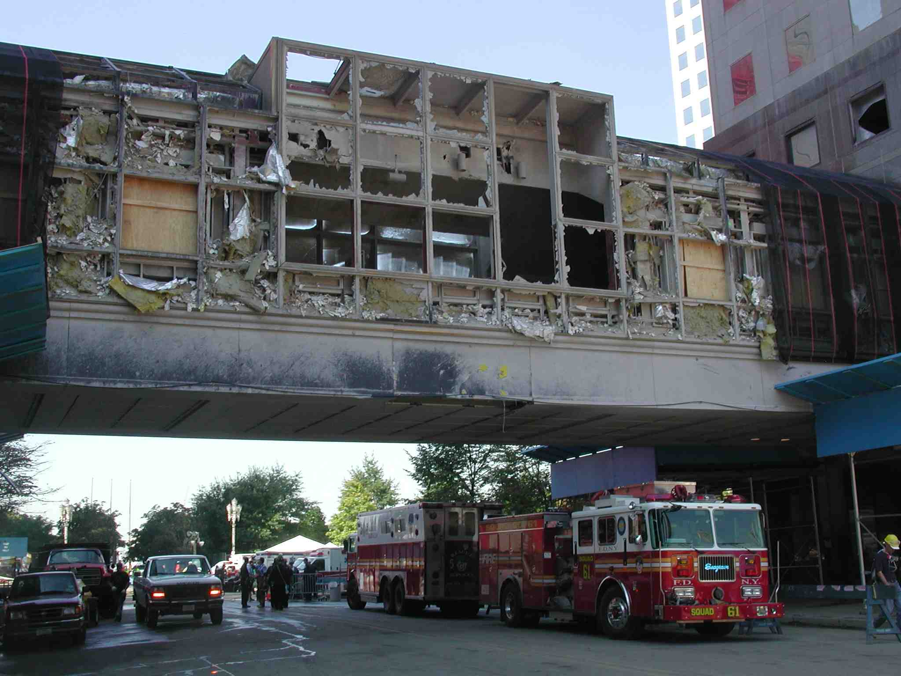
#29
Now there's a road clean enough to eat off of!�
How'd that happen?
(10/3/01) Source: by Anonymous Photographer
|
#24
PLENTY of flags in this photo! (at least 5 on the right side)
On the crane string? That looks like flag abuse to me!
(10/3/01) Source: by Anonymous Photographer
|
#23
And, why is the aluminum cladding blown off some of the outer columns
in this picture? Note, the columns obviously weren't buckled.
They appear as if the floors, which were connected to them, "just fell
off." So, what blew the cladding off? (I'm referring to the
peeled-open can look on the exterior columns.)
(10/3/01) Source: by Anonymous Photographer
|
#22
And, why is the aluminum cladding blown off some of the outer columns in this picture? Note, the columns obviously weren't buckled. They appear as if the floors, which were connected to them, "just fell off." So, what blew the cladding off? (I'm referring to the peeled-open can look on the exterior columns.)
(10/3/01) Source: by Anonymous Photographer
|
#21
and here:
Also, notice the flat-bed trucks, ready to load up beams.
They have big wooden blocks across the truck bed in preparation.
Hey, you wouldn't want any beams just laying around where anyone might
get access to them, right? ;-)
(10/3/01) Source: by Anonymous Photographer
|
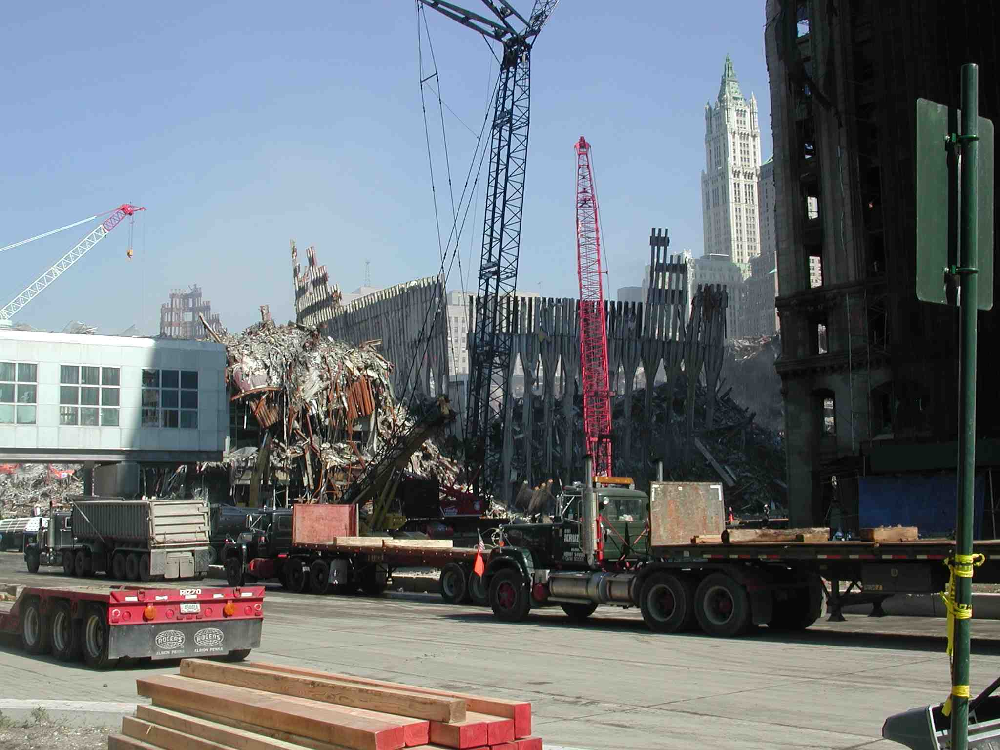
#20
Hehehe... it looks like they haven't started hauling beams, yet.
Check out the pile of brand new lumber. (lower left)
(10/3/01) Source: by Anonymous Photographer
|
|
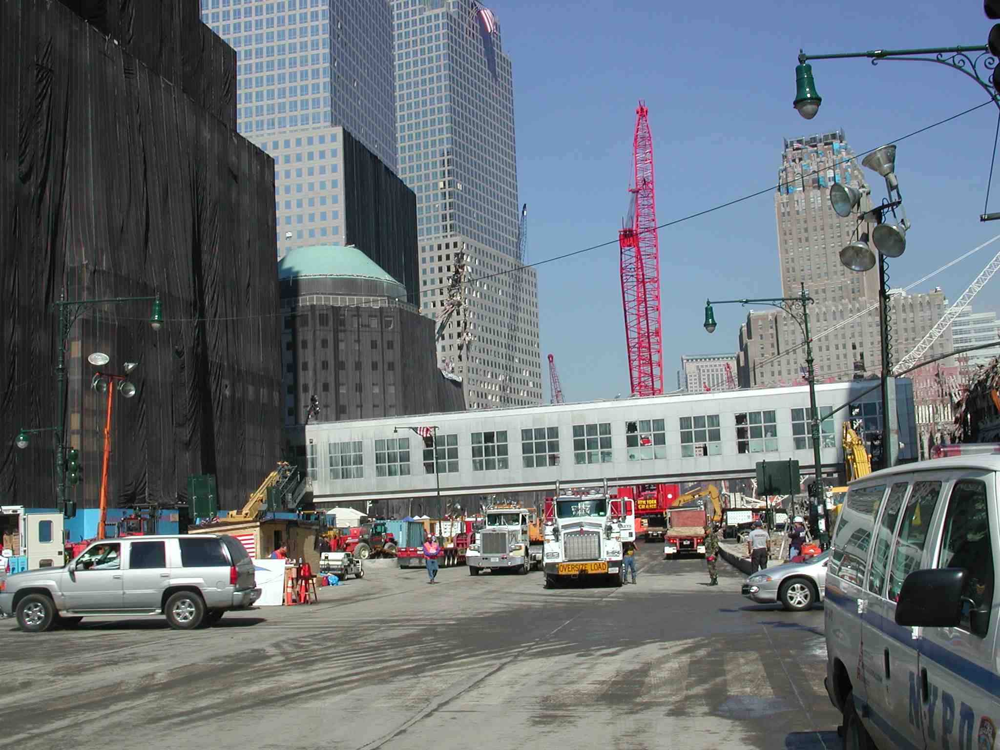
#17
Why is the military guy there? (right side) What's
he there to protect?
(10/3/01) Source: by Anonymous Photographer
|
|
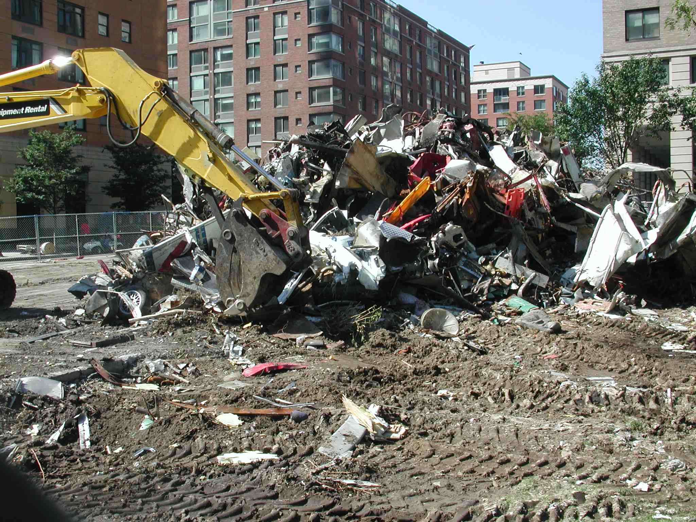
#16
Check out the car scraps they're scooping up.
(10/3/01) Source: by Anonymous Photographer
|
|
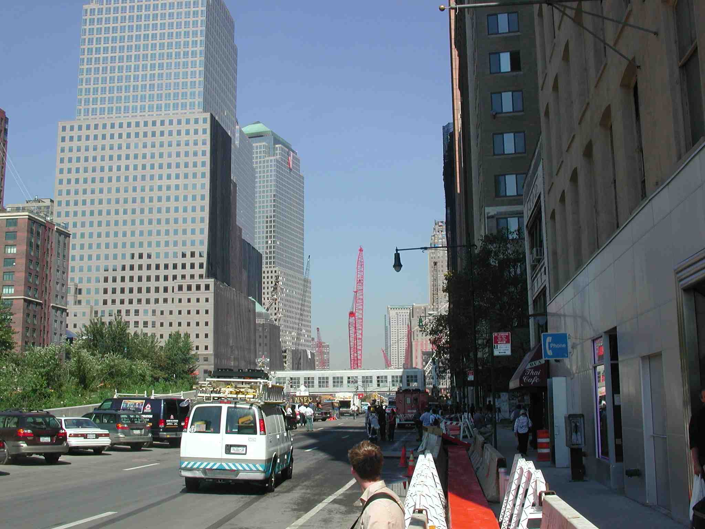
#14
Clean streets!
(10/3/01) Source: by Anonymous Photographer
|
|
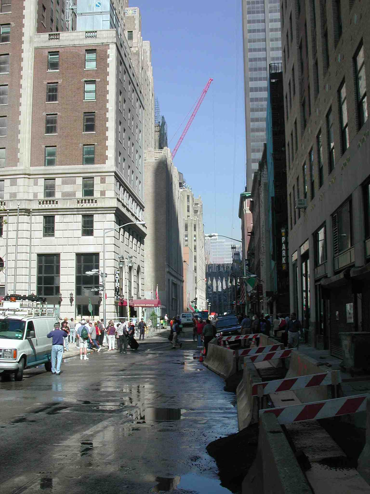
#12
Weird baracades filled with dirt.
(10/3/01) Source: by Anonymous Photographer
|
|
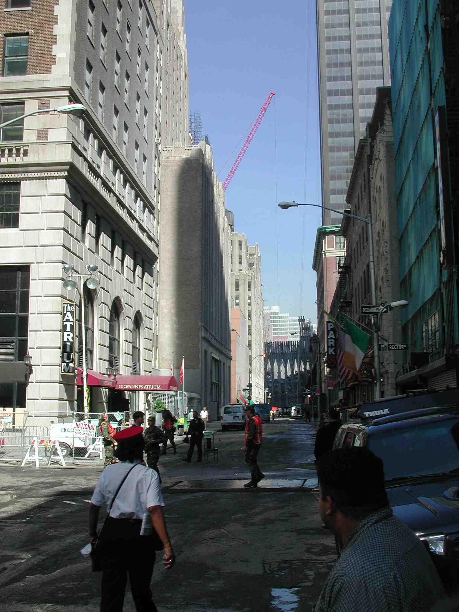
#10
A chair for the guard post?
(10/3/01) Source: by Anonymous Photographer
|
|
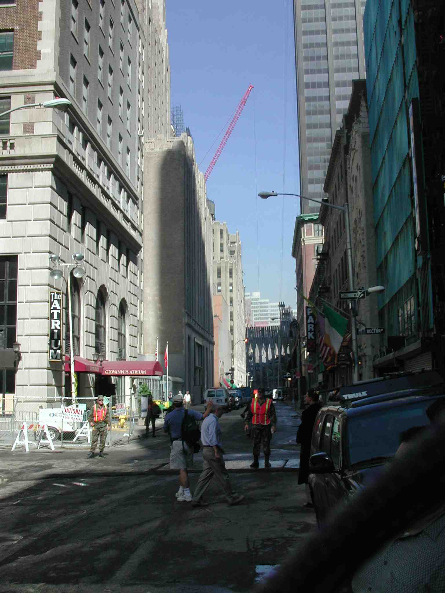
#09
The first 10 pictures in this series show armed guards keeping
folks away from the site. In the above picture, it looks like the
guy in shorts is getting in trouble for taking pictures! (He's the
guy with his right arm up, appearing to take a picture while signalling,
"I'll take just one minute then I'll go. please don't arrest me.")
(10/3/01) Source: by Anonymous Photographer
|
|
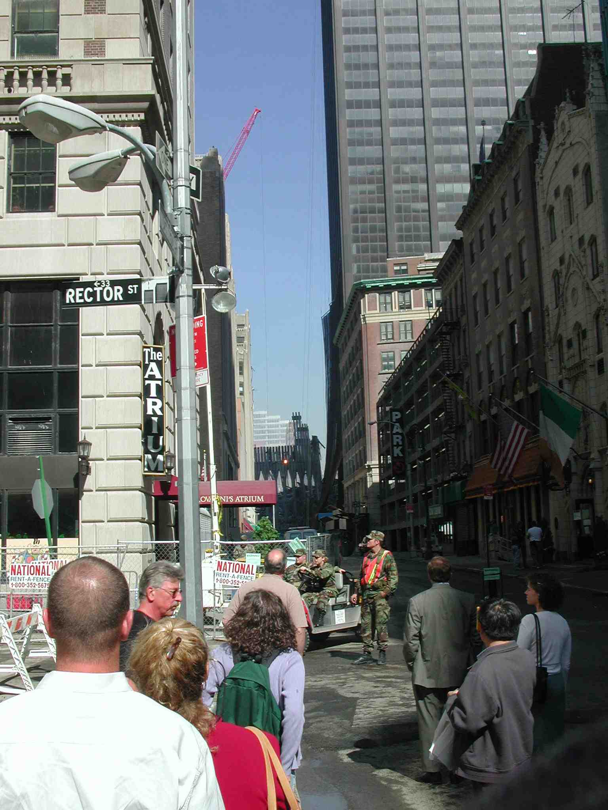
#07
Is this what our army does? Or, are these marines?
(10/3/01) Source: by Anonymous Photographer
|
|
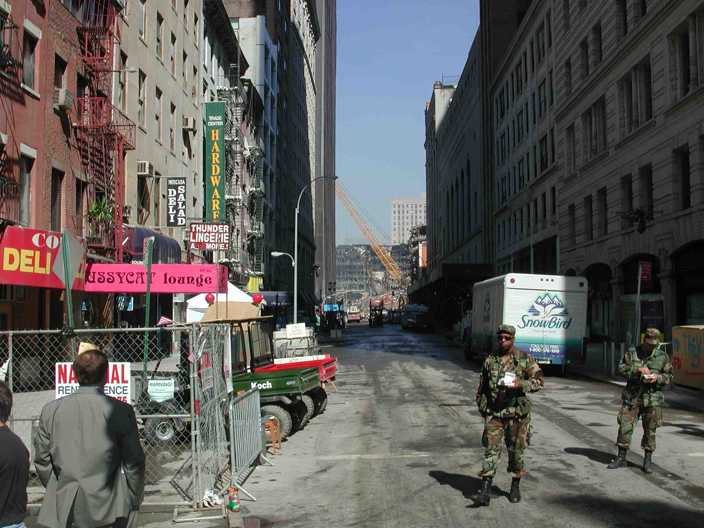
#05
Another creepy picture. Are they writing tickets?
(10/3/01) Source: by Anonymous Photographer
|
|
|
Hey, this isn't a war zone, is it?
|
|
In accordance with Title 17 U.S.C. Section 107, the articles posted on this webpage are distributed for their included information without profit for research and/or educational purposes only. This webpage has no affiliation whatsoever with the original sources of the articles nor are we sponsored or endorsed by any of the original sources.
© 2006-2007 Judy Wood and the author above. All rights reserved.
|
{kind=link}